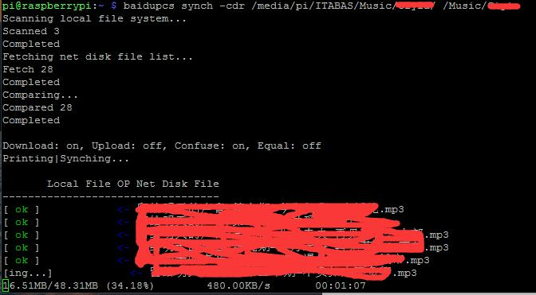

安利一款百度云盘下载工具
Contents
首先这款工具是在找Aira2-RPC网盘下载时才发现的，原来的chrome插件BaiduExporter，去年用过一段时间，我自己感觉不是很好，不知道是不是用法不对还是怎么，Aria2老半天才弹出来，现在大家普遍反应百度云对此类连接做了限制，所以找了找其它的就发现了这个。初步试了试感觉还不错，可以继续把百度云上的东西搬到自己的NAS上。一来摆脱百度云盘这个毒瘤应用程序，二来在Rasp上直接搞就行了。
Install(安装)
- 支持多线程下载和下载时断点续传。
- 支持快速上传和多线程分片上传。
- 支持线程限速。具体查看
pcs set和pcs context命令的说明。 - 支持
AES-CBC-128,AES-CBC-192,AES-CBC-256加密。
工具地址->BaiduPCS
1 | # 我用的`Debian`, 作者说程序依赖 libcurl |
如果是路由器层(如果刷的是Openwrt)可以参照作者教科书Openwrt。
Command(命令)
先来看一下help:1
2
3
4
5
6
7
8
9
10
11
12
13
14
15
16
17
18
19
20
21
22
23
24
25
26
27
28
29
30
31
32
33
34
35
36
37
38
39
40
41
42
43
44
45
46
47
48
49
50
51pi@raspberrypi:~ $ baidupcs -h
pcs v0.3.1 (API v1.1.5)baidupcs
Usage: baidupcs command [options] [arg1|arg2...]
Description:
The baidupcs is client of baidu net disk. It supplied many functions,
which can manage baidu net disk on terminal, such as ls, cp, rm,
mv, rename, download, upload, search and so on.
The baidupcs provided AES encryption, which can protected your data.
The baidupcs is open source, and published on MIT.
Please see https://github.com/GangZhuo/baidupcs.
Options:
--context=<file path> Specify context.
Commands:
cat Print the file content
cd Change the work directory
copy Copy the file|directory
compare Print the differents between local and net disk
context Print the context
download Download the file
echo Write the text into net disk file
encode Encrypt/decrypt the file
fix Fix file base md5 and scrap
help Print the usage
list List the directory
login Login
logout Logout
meta Print the file|directory meta information
mkdir Make a new directory
move Move the file|directory into other file|directory
pwd Print the current work directory
quota Print the quota
remove Remove the file|directory
rename Rename the file|directory
set Change the context, you can print the context by 'context' command
search Search the files in the specify directory
synch Synch between local and net disk. You can 'compare' first.
upload Upload the file
version Print the version
who Print the current user
Use 'baidupcs <command> -h' to print command usage.
Sample:
baidupcs help
baidupcs help cat
baidupcs cat -h
baidupcs cat /note.txt
baidupcs cd /temp
baidupcs cat /note.txt --context=/home/gang/.pcs_context
下面我就列几个我常用的几个：login, context, list, cat, compare, download, mkdir, synch, search其它的命令都可参照help文档。context里面存储是登陆后的cookie和其它一些基本配置信息(下载线程数，磁盘缓存等)，目前都是使用的默认值。
1 | # login |
下面配图两张: 下载速度刚开始还不错，时间长了百度云也限速[摊手~]

另外还有一个问题没解决，就是在下载单个大文件(size>2G)时会报磁盘空间不足，后面会试着看看能不能解决，下载大文件速度是个问题。
在32位Linux平台上无法下载大文件 #201
Tips：运行时间较长的任务使用tmux或screen命令
Author: itabas016
Link: https://tech.itabas.com/2017/11/25/tools/baidu-pan-download-tool/
License: CC BY-NC-ND 4.0